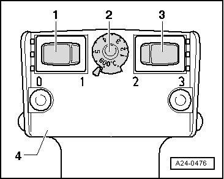
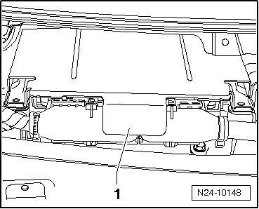
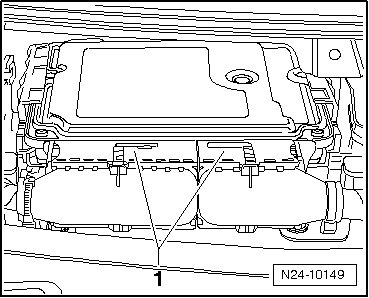
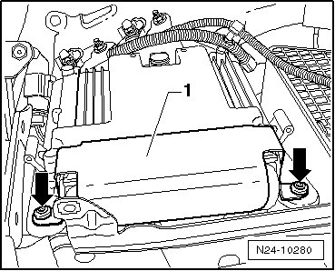

Engine Control Module with Anti-Theft Immobilizer
Engine Control Module with Anti-Theft Immobilizer
• If it is desired to replace Engine Control Module (ECM), connect vehicle diagnosis, testing and information system (VAS 5051B) and perform the guided function "Replace Engine Control Module (ECM)".
Special tools, testers and auxiliary items required
• Hot air gun from wiring harness repair kit (VAS 1978)
• Attachment nozzle from wiring harness repair kit (VAS 1978)
Removing
- Switch off ignition.
- Remove windshield wiper arms --> Electrical Equipment 92 Removal and Installation.
- Remove plenum chamber cover
• Thread of shear bolts is equipped with locking compound. By heating the shear bolts using a hot air gun, inhibition effect of the locking compound is lowered.
CAUTION!
Cover wires, harness connectors and control modules in the close vicinity of Engine Control Module (ECM) to prevent damage from burning.
Perform the adjustments on the hot air gun - 4 - as shown:
- Turn potentiometer for temperature adjustment - 2 - to maximum heat output (600° C).

- Move two stage switch for air quantity - 3 - to position 3.
CAUTION!
By heating the shear bolts, parts of the protective housing are heated intensely. Wear protective gloves to prevent injuries.
- Guide nozzle of hot air gun on to shear bolts.
- Switch on heat gun and heat screw head for approximately 20 to 25 seconds.
- Unscrew shear bolt - 2 - using pliers on bolt head.
The procedure for the second shear bolt is exactly the same.
- Remove cover - 1 - downward from control module.

- Slide connector release catches - 1 - on Engine Control Module (ECM) outward and disconnect both harness connectors.

- Remove Engine Control Module (ECM).
Installing
- Insert engine control module in frame in plenum chamber.
- Connect harness connectors to Engine Control Module (ECM) and slide release catches - 1 - inward.
- Place cover - 1 - over ECM and position new shear bolts - arrows - by hand.

- Tighten new shear bolts uniformly until bolt heads shear off.
- Install plenum chamber cover
- Install windshield wiper arms --> Electrical Equipment 92 Removal and Installation.